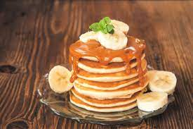

Pancakes with Dulce de Leche and Banana
Description:
Indulge in the perfect combination of flavors with these pancakes topped with creamy dulce de leche and fresh bananas. The fluffy pancakes are layered with slices of ripe banana and generously drizzled with dulce de leche, creating a heavenly breakfast or dessert option that will satisfy your sweet tooth.
Ingredients:
- 1 cup all-purpose flour
- 2 tablespoons granulated sugar
- 1 teaspoon baking powder
- 1/2 teaspoon baking soda
- 1/4 teaspoon salt
- 1 cup buttermilk
- 1 large egg
- 2 tablespoons unsalted butter, melted
- 1 teaspoon vanilla extract
- Dulce de leche, for topping
- 1-2 ripe bananas, sliced
- Maple syrup, for serving (optional)
Instructions:
- In a large bowl, whisk together the flour, sugar, baking powder, baking soda, and salt.
- In a separate bowl, whisk together the buttermilk, egg, melted butter, and vanilla extract.
- Pour the wet ingredients into the dry ingredients and stir until just combined. Do not overmix; the batter should be slightly lumpy.
- Heat a non-stick skillet or griddle over medium heat. Lightly grease with butter or cooking spray.
- Pour 1/4 cup of batter onto the skillet for each pancake. Cook until bubbles form on the surface, then flip and cook until golden brown on the other side.
- Repeat with the remaining batter, greasing the skillet as needed.
- Stack the pancakes on a plate, layering each pancake with sliced bananas.
- Drizzle generously with dulce de leche and serve warm.
- Optionally, serve with additional maple syrup on the side.
- Enjoy your delicious pancakes with dulce de leche and banana!